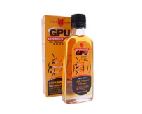
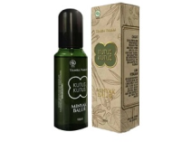

Minyak Urut GPU Cap Lang

Sisa Stock 27 Membantu meredakan nyeri otot, pegal linu, nyeri sendi, terkilir, sakit pinggang, dan keseleo, serta menghangatkan badan.Selain untuk urut, produk ini juga cocok dipakai untuk pemanasan sebelum olahraga atau mengurangi sakit dan tegang setelah berolahraga. |
Minyak Tawon.png)
Sisa Stock 10 Bermanfaat untuk meredakan nyeri sendi, sakit gigi, sakit kepala, gatal akibat digigit serangga, mual, dan sakit perut. |
Minyak Kutus-Kutus Tamba Waras

Sisa Stock 10 Mengatasi berbagai keluhan, seperti masuk angin, perut kembung, gatal-gatal karena gigitan serangga, pegal linu, encok, dan nyeri sendi. |
Minyak Kayu Putih Cap Lang
Sisa Stock 18 Cap Lang Minyak Kayu Putih dipercaya bermanfaat untuk membantu meringankan perut kembung, sakit perut, mual, sakit kepala, pegal, nyeri otot dan mengobati gatal akibat gigitan serangga atau nyamuk. Minyak kayu putih juga sering digunakan sebagai minyak urut untuk memijat tubuh. |
Minyak Zaitun Mustika RatuSisa Stock 18 Digunakan sebagai minyak urut yang ideal untuk relaksasi dan melemaskan otot yang tegang.Selain itu, produk ini juga bermanfaat untuk membantu merawat dan melembabkan kulit. Minyak zaitun mengandung lemak dan vitamin E yang dapat melembabkan kulit, sedangkan kandungan biji mojokeling di dalam produk ini juga dipercaya bisa mencerahkan dan mengencangkan kulit. |